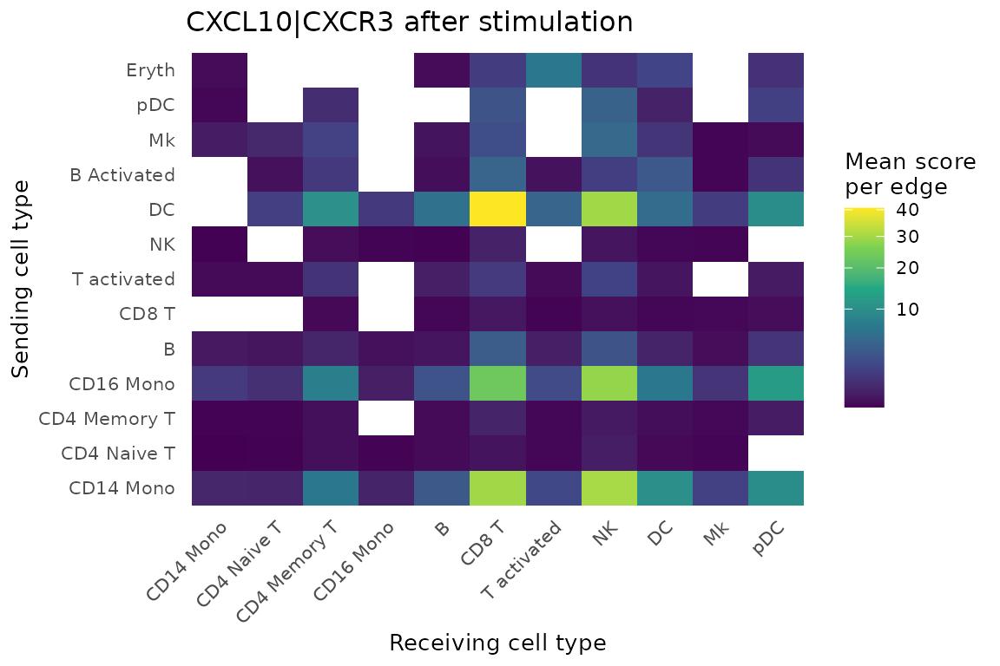

Non-spatial tutorial: stimulated PBMCs
Source:vignettes/articles/nonspatial-tutorial.Rmd
nonspatial-tutorial.RmdThis tutorial runs NICHESv2 on scRNA-seq data with no spatial
coordinates: 13,999 human PBMCs, either untreated (CTRL) or
stimulated with interferon-beta (STIM). You’ll score LR
signaling between sampled cell pairs and compare the two conditions.
Without coordinates, nothing tells us which cells really touched. NICHESv2 therefore samples cell pairs within each pair of cell types. Treat the results as what cell types could signal to each other, not as observed contacts.
With n.cores = 2, the slowest step takes about 1 minute
and needs about 4 GB of memory.
Get the data
download_NICHESv2_data() fetches the dataset from a
NICHESv2 release on GitHub, so you don’t need any other package. The
download is about 11 MB and happens once; later calls read the saved
copy.
library(NICHESv2)
library(data.table)
library(ggplot2)
inputs <- download_NICHESv2_data("ifnb", verbose = FALSE)
dim(inputs$count.mtx)
#> [1] 14053 13999
table(inputs$meta.data$stim)
#>
#> CTRL STIM
#> 6548 7451inputs holds the raw counts as a sparse genes x cells
matrix, and the cell metadata. Two metadata columns matter here:
stim holds the condition, and
seurat_annotations holds 13 cell types. To prepare the same
inputs from a Seurat object, see Starting
from a Seurat object.
Build the NICHESObject
sample.col = "stim" builds edges separately within each
condition, so a CTRL cell is never paired with a
STIM cell. Set it whenever your data has several samples,
donors or conditions. cell.type.col is required in this
mode, and the sampling is repeatable through seed, which
defaults to 42.
obj <- create_NICHESObject(
count.mtx = inputs$count.mtx,
meta.data = inputs$meta.data,
LRM.db = "connectomedb2025",
species = "human",
mode = "nonspatial",
sample.col = "stim",
cell.type.col = "seurat_annotations",
method = "product",
n.cores = 2L,
verbose = FALSE
)
dim(obj)
#> cells genes edges LRMs
#> 13999 14053 87957 1047Every edge stays within one condition:
obj$edge.meta[, .(edges = .N), by = .(Sending.stim, Receiving.stim)]| Sending.stim | Receiving.stim | edges |
|---|---|---|
| CTRL | CTRL | 40,962 |
| STIM | STIM | 46,995 |
Compare the conditions
$edge.meta carries the condition and cell type of both
cells on every edge, so it joins directly onto the scores. The two
conditions have different numbers of edges, so this divides each total
by that number.
edge.info <- obj$edge.meta[, .(
edge,
stim = Sending.stim,
sender = Sending.seurat_annotations,
receiver = Receiving.seurat_annotations
)]
scores <- merge(obj$edge.data[, .(edge, LRM, score)], edge.info, by = "edge")
n.edges <- edge.info[, .(n.edges = .N), by = stim]
by.condition <- scores[, .(total = sum(score)), by = .(LRM, stim)]
by.condition <- merge(by.condition, n.edges, by = "stim")
by.condition[, mean.per.edge := total / n.edges]
wide <- dcast(by.condition, LRM ~ stim, value.var = "mean.per.edge", fill = 0)
wide[, fold.change := (STIM + 0.01) / (CTRL + 0.01)]
wide[STIM > 0.5][order(-fold.change)][1:5]| LRM | CTRL | STIM | fold.change |
|---|---|---|---|
| CCL8|CCR1 | 0.003 | 3.272 | 259.706 |
| CCL8|CCR5 | 0.001 | 1.818 | 163.283 |
| CXCL11|CCR5 | 0.000 | 0.596 | 57.817 |
| CXCL10|TLR4 | 0.009 | 0.929 | 48.417 |
| ISG15|ITGB2 | 0.078 | 4.058 | 46.228 |
Interferon-induced chemokines lead this list, which is what we’d expect from this stimulation. Comparing raw scores between conditions is a simple first look, and it doesn’t correct for differences in sequencing depth.
Follow one signal
CXCL10 is a classic interferon-induced chemokine, and CXCR3 is its
receptor. This finds the cell-type pairs that carry the strongest
CXCL10|CXCR3 signal after stimulation.
cxcl10 <- scores[LRM == "CXCL10|CXCR3" & stim == "STIM"]
pair.edges <- edge.info[stim == "STIM", .(n.edges = .N), by = .(sender, receiver)]
by.pair <- merge(
cxcl10[, .(total = sum(score)), by = .(sender, receiver)],
pair.edges,
by = c("sender", "receiver")
)
by.pair[, mean.per.edge := total / n.edges]
ggplot(by.pair, aes(receiver, sender, fill = mean.per.edge)) +
geom_tile() +
scale_fill_viridis_c(name = "Mean score\nper edge", trans = "sqrt") +
labs(x = "Receiving cell type", y = "Sending cell type",
title = "CXCL10|CXCR3 after stimulation") +
theme_minimal(base_size = 10) +
theme(axis.text.x = element_text(angle = 45, hjust = 1),
panel.grid = element_blank())
Dendritic cells and monocytes are the main senders, and CD8 T and NK
cells are the main receivers. Rare cell types such as Eryth
rest on few edges, so read their values with care.
What differs from spatial mode
-
add_neighborhood_composition()stops in this mode, because neighbor cell types would only reflect the sampling. -
add_neighborhood_edge_agg()runs, but its neighbors are sampled partners, not physical neighbors. -
export_to_TissuePlex()needs coordinates, so it applies to spatial data.
Data source
The data are from Kang HM, Subramaniam M, Targ S, et al. Multiplexed
droplet single-cell RNA-sequencing using natural genetic variation.
Nat Biotechnol. 2018;36(1):89-94 (GEO: GSE96583). Cell-type
labels are from the Satija Lab. NICHESv2 hosts a copy taken from the
ifnb object in the SeuratData package
ifnb.SeuratData, under its CC BY 4.0
license. The copy keeps the raw counts and cell metadata unchanged. The
PROVENANCE.md file that comes with the download gives the
details.